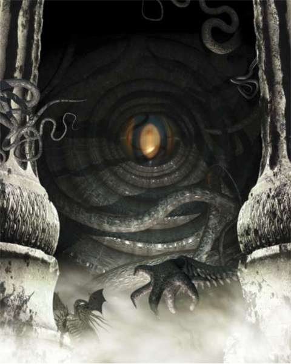

과거, 현재, 미래, 그 모든 것이 요그 소토스 안에서 하나가 된다. 그는 올드원이 어디에서 나왔으며,
어디로 다시 나올지 알고 있다. 그는 올드원이 지구 어디에 있는 들녘을 걸었으며, 지금은 또 어디를 걷고 있는지, 왜 그들이 걷는 모습을 아무도 볼 수 없는지 알고 있다. 인간은 종종 그 냄새로 올드원이 가까이 있음을 알지만, 그 생김새를 알지 못하며, 올드원이 인간의 몸으로 낳게한 종족만을 겨우 알아볼 뿐이다. 올드원은 보이지 않으며 실체가 없으나, 인간의 몸으로 그들을 가장 이상적인 형태로 구현한 후손들은 그 수가 많으며 각기 다른 모습을 하고 있다. 계시의 말씀이 있고, 때마다 의식이 떠들썩하게 거행되는 외진 도처마다 올드원의 후손이 인간의 눈에 들지 않게 걸어가며 냄새를 풍긴다. 바람이 그들의 목소리를 전하며, 땅이 그들의 의식을 말해준다. 그들은 숲을 정복하고 도시를 파괴하나, 누구도 그 파멸의 손을 보지 못한다. 차가운 황무지에 있는 카다스는 그들을 알건만, 카다스를 아는 자 누구인가? 남극의 버려진 빙산과 해양의 해저 섬들에 그들의 봉인이 새겨진 석상이 있건만, 그 얼어붙은 동토의 도시 혹은 오랜 세월 해초와 굴 등으로 수놓아진 탑을 본 자 누구인가? 위대한 크툴루가 그들의 사촌이나, 그 역시 어렴풋한 그림자로만 그들을 볼 수 있다. 이야! 슈브 니구라스![1] 그들이 사악한 존재라는 사실만 알 수 있다. 그들의 손이 숨통을 쥐는 순간에도 인간은 그들을 보지 못하며, 아무리 문간을 걸어 잠가도 그들의 출입을 막지 못한다. 요그 소토스는 모든 천체가 만나는 세계로 들어가는 관문이다. 인간이 지금 통치하는 곳, 과거 올드원이 통치했던 곳이다. 인간이 지금 통치하는 곳, 머잖아 올드원이 통치할 곳이다. 여름 다음에 겨울이 오고, 겨울 다음에 여름이 오듯이 그들은 지금도 묵묵히 그리고 힘차게 다시 통치할 날을 기다리고 있다.[2] 